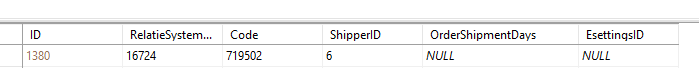

Lightspeed ECOM
Dataflows
- Order Update
- Full Stock Update
- Changed Stock Update
- Product Match (Incl. Product Import)
- Order Import
- Changed Product Match (Letop: Dit onderdeel wordt niet standaard toegevoegd aan de koppeling)
Deze koppeling beschikt over dataflow instellingen. Meer informatie hierover is te vinden via Dataflow instellingen
Bijzonderheden
Order Import Gewenste leverdatum
Gewenste leverdatum wordt mee geïmporteerd uit het veld deliverydate.
De Lightspeed orderimport haalt altijd de annuleringen van orders op.
Verzenderkeuze importeren
Shipper mapping
In Lightspeed kan de klant verzenders aanmaken. Zo'n verzender krijgt een ID. Deze ID staat in de URL als je de verzendmethode in Lightspeed opent, zie screenshot. Bij dit ID kan een shipper mapping aangemaakt worden.


Lightspeed heeft ook plug-ins die verzendmethodes aanmaken. In dit geval moet de plug-in een ID aanmaken en plaatsen in het veld shipment_id. Deze kunnen we dan ook mappen.
Ondersteunde (geteste) plug-ins: shipping-by-zipcode-shipments
Monta checkout plugin
Gekozen opties in de Monta checkout plugin worden geimporteerd.
PostNL Plug-in
De postNL plugin zorgt ervoor dat klanten in de checkout van de shop PostNL shipperopties en pick-up point kan importeren. Monta ondersteund de PostNL Plugin, waarin we een aantal opties ondersteunen:
- Ochtendlevering: Order in de ochtend leveren.
- Pickup Point (PAK): Leveren op pickup points
- Avondlevering: Order in de avond leveren.
- Niet bij de buren: Order mag niet bij de buren afgeleverd worden.
- Parcel Machine: Order moet worden geleverd in een Parcel box (kluisje bij winkels b.v.)
- SameDay: De order moet dezelfde dag nog geleverd worden.
- Brievenbuspakje: Order in een brievenbuspakje indien mogelijk.
Paazl Plugin
De Paazl plugin zorgt ervoor dat klanten in de checkout van de shop PostNL pick-up point kan importeren. Monta ondersteund de Paazl Plugin, waarin we een aantal opties ondersteunen:
- Pickup points
B2B of B2C
Een consument kan selecteren in Lightspeed of ze privé of zakelijk zijn. Wanneer de consument aangeeft een zakelijke klant te zijn dan zal de order worden geimporteerd als B2B. Als de consument aangeeft een prive klant te zijn dan zullen we de order importeren als B2C.
Lighspeed omnichannel:
LETOP monta kan niet koppelen met lightspeed omnichannel. Monta kan enkel koppelen met lighspeed ECOM.
Instellingen
order import
ImportPickupOrders= Dan zet hij de order standaard op wordt afgehaald wanneer de orderstatus Processing awaiting pickup is.
ImportCustomerCommentAsOrderReference = Als je deze instelling aanzet zullen we de customer commend in lightspeed importeren als Referentie in Monta.
UpdateWhenAlreadyExistsInOrigin= Wordt niet meer gebruikt! Dit kan worden ingesteld in de dataflow settings.
SupplierTitlesFilter = Hier kan je supplieer titles invoeren (meerder scheiden met komma's). Wanneer deze overeenkomt dan zullen we deze orderline importeren. Als de supplier niet overeenkomt dan zullen we deze orderline niet importeren.
CustomStatusIds = Het is mogelijk om custom statussen te importeren via de koppeling. Dit kunnen ook meerdere statussen zijn door komma gescheiden. Deze instelling overschrijft de normale statussen niet, de standaard statussen blijven we importeren.
ImportAwaitingPayment = Als je deze instelling aanzet importeren we ook de order met de betaalstatus 'Awaiting Payment".
Orderwijzigingen:
Met de instelling UpdateWhenAlreadyExistsAndPlatformSupportsIt kunnen we orderwijzigingen en annuleringen importeren.
Order Update
Do Notify Shipped = Als deze aan staat dan zal de monta Lightspeed de trigger geven om de consument een 'Verzonden' mail te sturen vanuit lightspeed. Als deze instelling uitstaat zal er geen mail worden verstuurd uit lightspeed.
DoNotifyTrackingCode = Dit is een vinkje in lightspeed die je met de koppeling aan of uit kan zetten per orderudpate. Deze instelling in lightspeed zorgt ervoor dat de trackingcode meegestuurd wordt in de verzendbevestiging vanuit lightspeed.
Checkout
Voor lightspeed is er een checkout module beschikbaar. Meer informatie hierover is te vinden via Checkout informatie